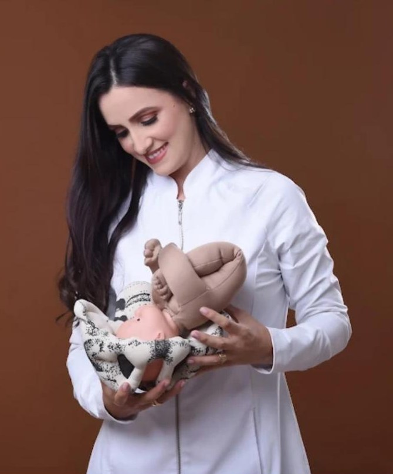

Meu cuidadovai muito alémdo parto.
Acolho, preparo e fortaleço mulheres na maternidade: uma gestação mais leve, um parto seguro e um puerpério com cuidado, até os primeiros cuidados com o bebê.

Ao seu lado em cada fase.
Escolha a fase em que você está e veja como a fisioterapia pélvica pode cuidar de você.
Em que semana você está?
Arraste e veja o que costuma ser trabalhado em cada fase da gestação.
Orientação geral. O plano de cuidado é definido na avaliação, junto com o acompanhamento do seu pré-natal.
Dra. Márcia Quirino
Fisioterapeuta pélvica em Serra Talhada, dedicada à saúde da mulher na maternidade: da descoberta da gravidez aos primeiros meses com o bebê.
“Gestação não precisa ser sinônimo de dor. Seu corpo também pode ser preparado para esse encontro.”
Cuidado que se vê.
Conteúdo sobre gestação, parto e bebês
Acompanhe as dicas da Dra. Márcia no Instagram.
No Centro de Serra Talhada.
Consultório
Confirme os horários pelo WhatsApp
Sua preparação começa aqui.
Agende sua avaliação pelo WhatsApp e viva a maternidade com mais segurança e acolhimento.